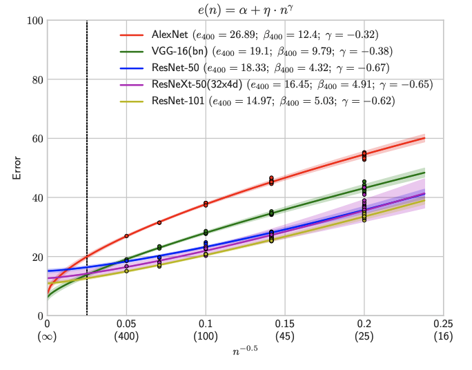
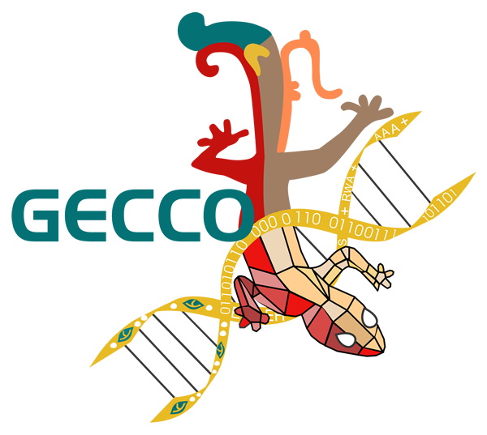

|
I am a 1st year computer science PhD student at the University of Illinois at Urbana-Champaign. I am currently working with Professor Derek Hoiem. Previously, I received my bachelor's and Masters of Engineering degrees in computer science from MIT in 2019 and 2020. At MIT, I was a member of the ALFA Group . Email / Google Scholar / LinkedIn / CV |
{kind=link}
May 2021: I will be interning at Amazon this summer
|
|
My current research interests are in meta-learning, transfer learning and life-long learning, particularly within the context of computer vision. I am interested in how we can develop models that easily and efficiently adapt to new tasks in different types of environments. Previously, I did research on using evolutionary algorithms for cyber security. |
|  |
Derek Hoiem, Tanmay Gupta, Zhizhong Li, Michal M. Shlapentokh-Rothman In Submission In this work, we use learning curves to investigate the effects of various design choices on neural network performance. We propose a method for estimating learning curves, abstract their parameters into error and data-reliance, and evaluate the effectiveness of different parameterizations. |
|  |
Michal Shlapentokh-Rothman, Erik Hemberg, Una-May O'Reilly GECCO Workshop on Genetic and Evolutionary Computation in Defense, Security, and Risk Management In this work, we show how we can use a competitive co-evolutionary framework to evaluate different software defined perimeters (SDP). |
Artificial Intelligence (CS 440): Fall 2020 |
My Father |
{kind=link}
{kind=link}
{kind=link}